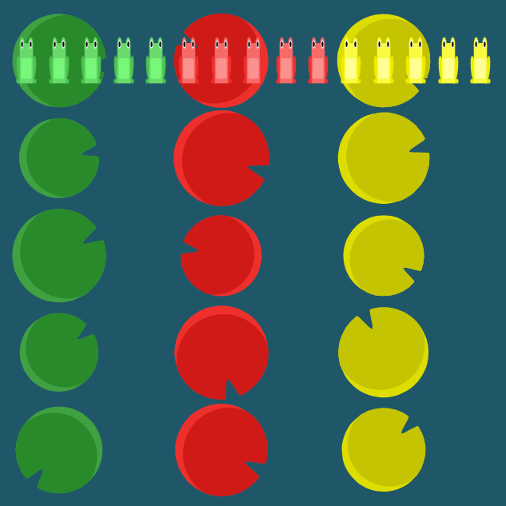
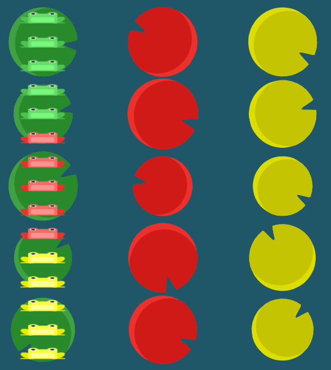
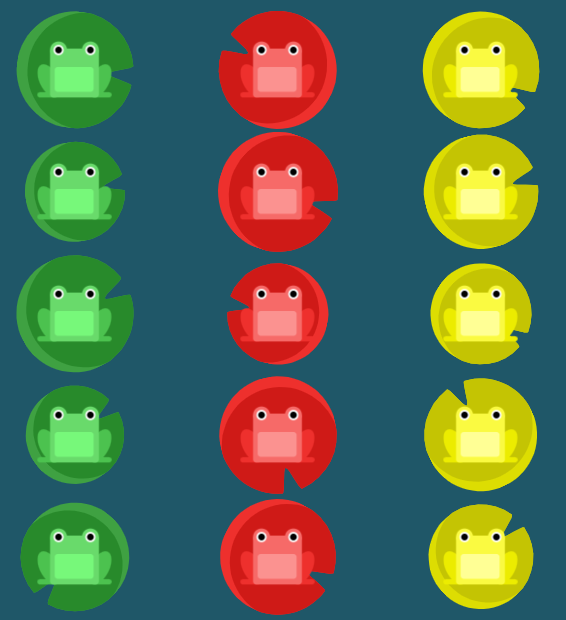
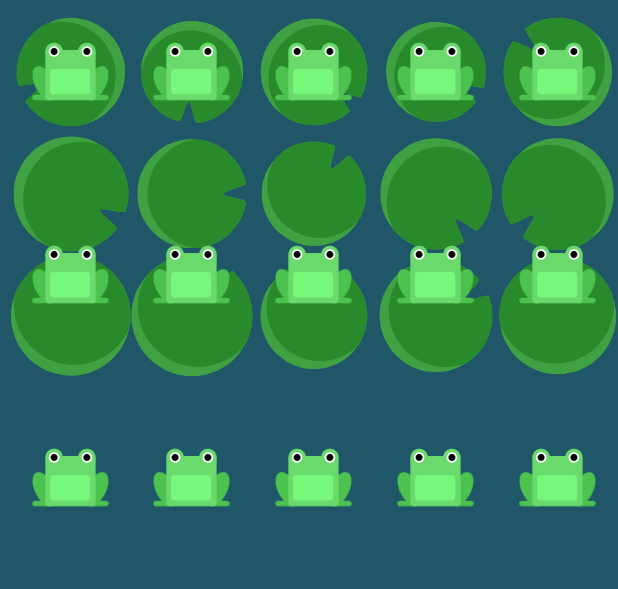
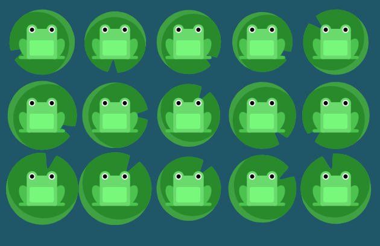

nivel 19
O código utiliza três propriedades do Flexbox que trabalham juntas para organizar os elementos dentro do #pond.
display 1: flex: ativa o Flexbox no elemento, fazendo com que os elementos que estão dentro dele possam
ser organizados de acordo com as regras do Flexbox.

display 2:
flex-direction: column define que a direção principal da organização será vertical, ou seja, os elementos
serão colocados um abaixo do outro, formando uma coluna.

display 3:
flex-wrap: wrap permite que os elementos
quebrem para uma nova coluna quando não houver mais espaço disponível na coluna atual.
Dessa forma, primeiro os sapos são organizados de cima para baixo e,
quando a primeira coluna fica cheia, os próximos sapos passam para a coluna seguinte, permitindo formar as
três colunas solicitadas no exercício.

resposta;
#pond {
display: flex; /* ativa o Flexbox para poder organizar os elementos */
flex-direction: column; /* organiza os elementos em uma coluna, em sequência */
flex-wrap: wrap; /* permite quebrar para uma nova coluna quando não houver mais espaço */
}
nivel 21
O código utiliza três propriedades do Flexbox para organizar os elementos
dentro do #pond. Neste nível, a principal novidade é a
propriedade align-content, que controla como as diferentes
linhas de elementos são posicionadas dentro do espaço disponível do container.
display 1: flex ativa o Flexbox no elemento, fazendo com
que os elementos que estão dentro dele possam ser organizados de acordo
com as regras do Flexbox.
display 2: flex-wrap: wrap permite que os elementos
sejam distribuídos em várias linhas quando não houver espaço suficiente
para que todos fiquem em uma única linha.

display 3:
align-content: flex-start faz com que as
linhas de elementos sejam agrupadas no início do container. Assim,
as diferentes linhas de sapos ficam posicionadas na parte superior
do lago, sem distribuir o espaço restante entre elas.

Dessa forma, o
align-content: flex-start organiza as
linhas no início do container, deixando o espaço restante abaixo delas.
resposta;
#pond {
display: flex; /* ativa o Flexbox para poder organizar os elementos */
flex-wrap: wrap; /* permite que os elementos quebrem para novas linhas */
align-content: flex-start; /* coloca todas as linhas no início do container */
}